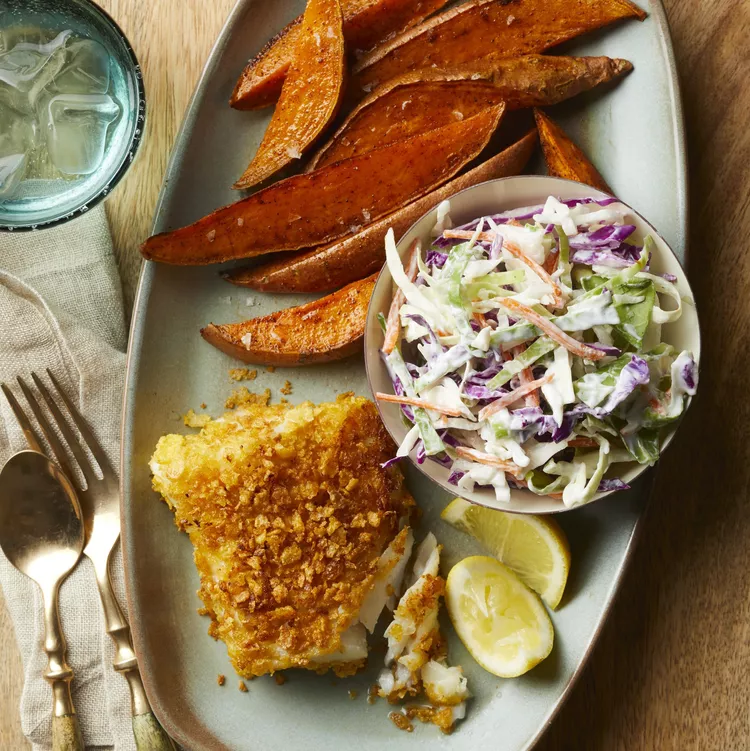

Crispy Fish and Chips
Home

Classic Crispy Fish and Chips
This British pub-style fish and chips features ultra-crispy beer-battered cod with golden, fluffy chips. The secret is in the ice-cold batter and double-fried chips for perfect texture.
Served with tartar sauce and malt vinegar, this is the ultimate crispy yet light fish with chips that stay crunchy outside and fluffy inside.
Ingredients
For the Fish
- 4 (6-8 oz) cod fillets (or haddock), 1-inch thick
- 1 cup all-purpose flour (+ extra for dusting)
- 1 tsp baking powder
- 1 tsp salt
- ½ tsp black pepper
- 1 tsp paprika
- 1 cup cold beer (lager or ale)
- 1 large egg white, whipped to stiff peaks
- Vegetable oil for frying
For the Chips
- 4 large russet potatoes (about 2 lbs)
- 1 tbsp white vinegar
- 2 tsp salt
- Vegetable oil for frying
For Serving
- Lemon wedges
- Malt vinegar
- Tartar sauce
- Mushy peas (optional traditional side)
Steps
Preparing the Chips
- Peel potatoes and cut into ½-inch thick sticks. Rinse under cold water until water runs clear.
- In a large pot, cover potatoes with cold water, add vinegar and 1 tsp salt. Bring to boil, then simmer for 3-4 minutes until slightly softened but not falling apart.
- Drain well and pat completely dry with kitchen towels. Let air-dry for 10 minutes.
First Fry (Chips)
- Heat oil in deep fryer or heavy pot to 300°F (150°C).
- Fry potatoes in batches for 4-5 minutes until cooked through but not colored. Drain on wire rack.
- Increase oil temperature to 375°F (190°C) for second fry.
Preparing the Fish
- Pat fish fillets dry and season lightly with salt.
- Whisk together flour, baking powder, salt, pepper, and paprika in a bowl.
- Gradually whisk in cold beer until smooth batter forms (should coat the back of a spoon).
- Gently fold in whipped egg white just before frying.
Final Frying
- Dust fish with flour, then dip in batter, letting excess drip off.
- Fry fish in 375°F oil for 4-5 minutes until golden brown and crispy. Drain on wire rack.
- Fry chips again at 375°F for 2-3 minutes until golden and crispy. Salt immediately.